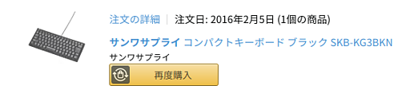
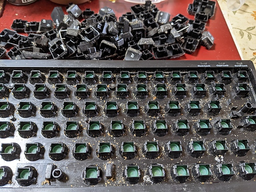
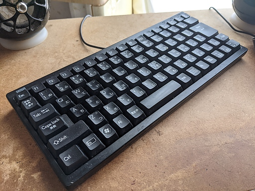
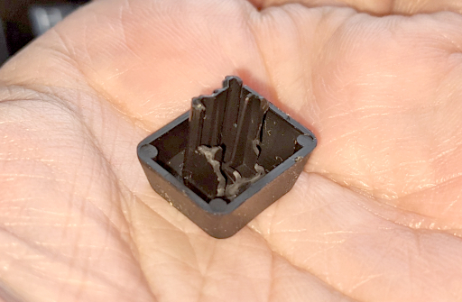

かなり昔に Amazon で購入した ( 当時の Amazon はまだまともに買い物ができた ) サンワサプライのキーボードを部屋の片隅に転がしていたのだけれど、ホコリやらいろんなもので汚れたものが目に入ってしまい、どうしても気になり始めて掃除したくてたまらなくなった。
いつ購入したのか調べてるみると下のスクリーンショットの通り 2016 年 02 月 05 日とある。5 年も前に購入したキーボードだ。購入当時 HHKB が欲しくて欲しくてたまらなかったが ( 現在でも欲しいが ) HHKB が容易に手が出る価格ではなかったため財布と相談してサイズが似かよったこいつをお迎えすることになった経緯がある。

5 年以上 1 度も掃除することなく今日を迎えていることになる。掃除への欲求が止まらなくなったので、すでに現役を ThinkPad Keyboard に譲っており隠居の身ではあるけれど、これを機会にきれいにしてやることにした。
さっそくすべてのキーキャップを外してみた。すると眼下には「わが夫となる者はさらにおぞましきものを見ることとなるだろう」という古から伝わる警告の通りおぞましきものを見ることになった。

あとはただひたすらにティッシュペーパーと綿棒にエタノール水溶液をつけてトレー部分とキーキャップを磨いた。2 時間くらいかかったろうか。掃除をしながら「このトレーがあるおかげで飲んだり食べたりしながらでもキーボードが壊れることがなかったのだな」ということが容易に理解できた。自分の穢れを、自分が汚れることでこのトレーがすべて受け止めてくれいていたのだ。
やはり道具への感謝はきちんとメンテナンスしてやることで表明してやらなければならない。約 2 時間かけてきれいに洗車……ではなかった、きれいに汚れを落としてやった。完全ではないけれど。

それとキーを戻すときに多少の犠牲が発生したことに触れておかねばなるまい。

F10 ！！大丈夫だ！！君はまだ働ける！！